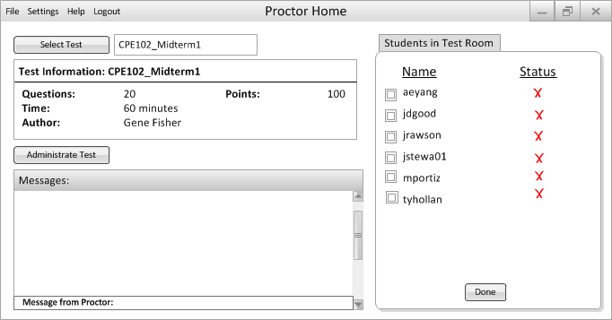
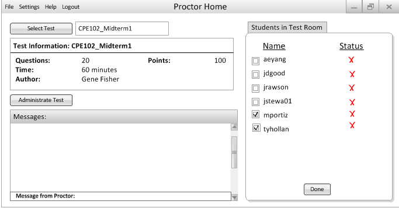
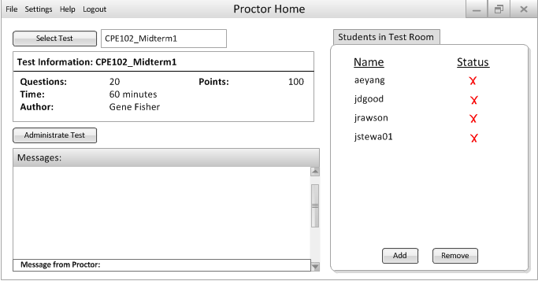

After the teacher has loaded up a test, see Figures 2.4.1.1.1, 2.4.1.1.2, and 2.4.1.1.3, they can clcik on the Remove button to drop a student from the list. This will result in the appearance of checkboxes next to names as seen in Figure 2.4.1.3.1.
Figure 2.4.1.3.1: Default Drop Student Dialogue
This method allows the proctor to remove several students from the list at once as seen in Figures 2.4.1.3.2 and 2.4.1.3.3
Figure 2.4.1.3.2: Checked Drop Student Dialogue
Figure 2.4.1.3.3: Result of Removing Student(s)